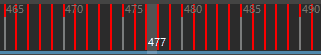
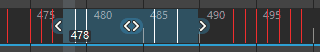

删除关键帧集是将关键帧集从已设置动画的对象中移除，而不会将关键帧集保存到关键帧剪贴板。
注： 不存在 deleteKeys MEL 命令。删除关键帧的相关 MEL 命令为 cutKey -clear。
设定“删除关键帧”(Delete Keys)选项
- 从“关键帧”(Key)菜单中选择“关键帧 > 删除”(Key > Delete) >
 。
。
- 在删除关键帧选项(Delete Key Options)窗口中，执行下列操作之一：
- 单击“删除关键帧”(Delete Keys)设定“删除关键帧”(Delete Keys)选项并删除当前关键帧。
- 单击“应用”(Apply)设定“删除关键帧”(Delete Keys)选项并删除当前关键帧。
- 单击“关闭”(Close)放弃对“删除关键帧”(Delete Keys)选项所做的任何更改，并关闭“删除关键帧选项”(Delete Keys Options)窗口。
删除关键帧
- 执行下列操作之一：
- 若要选择单个关键帧，请单击“时间滑块”(Time Slider)中的关键帧。
当前时间指示器将移动到单击的位置，且该关键帧现已选定。
- 若要选择多个关键帧，请按住 Shift 键并在“时间滑块”(Time Slider)中的关键帧范围内进行拖动。另请参见本主题中的删除自定义关键帧范围、涟漪删除自定义关键帧范围和仅删除未捕捉的关键帧（子帧）。
该范围内的关键帧现已选中并以红色亮显。
- 执行下列操作之一：
- 在关键帧上单击鼠标右键并从显示的弹出菜单中选择“删除”(Delete)。
- 选择。
如果“删除关键帧”(Delete Keys)选项中的“时间范围-全部”(Time Range-All)处于活动状态，则会删除当前对象的所有关键帧。如果在“删除关键帧”(Delete Keys)选项中启用“时间范围-开始/结束”(Time Range-Start/End)，则仅删除指定的“开始”(Start)时间和“结束”(End)时间之间的关键帧。如果在“删除关键帧”(Delete Keys)选项中启用“时间范围-时间滑块”(Time Range-Time Slider)，则仅删除范围滑块的“开始”(Start)时间和“结束”(End)时间之间的关键帧。
- 按住 Shift+S 的同时单击并从显示的标记菜单中选择“删除关键帧”(Delete Keys)。
删除自定义关键帧范围
- 在“曲线图编辑器”(Graph Editor)的“关键帧”(Keys)菜单中，选择“移除关键帧”(Remove Key) >“当前帧之前”(Before Current Frame)、“当前帧之后”(After Current Frame)或“超出选定范围”(Outside Selected Range) >
 以打开选项窗口。
以打开选项窗口。
- 在选项窗口中，设置要删除的范围。也可以选择“全部”(All)以移除每个关键帧。

涟漪删除自定义关键帧范围
- 在“曲线图编辑器”(Graph Editor)的“关键帧”(Keys)菜单中，选择“移除关键帧 > 删除涟漪”(Remove Key > Ripple Delete) > 以打开选项窗口。
- 在选项窗口中，可以选择在删除点处设置关键帧。

涟漪删除会移除“删除涟漪”(Ripple Delete) > 选项中设置的范围之间的关键帧，并关闭由删除创建的间隙。
仅删除未捕捉的关键帧（子帧）
- 在“曲线图编辑器”(Graph Editor)的“关键帧”(Keys)菜单中，选择 > 以打开“移除未捕捉关键帧选项”(Remove Unsnapped Keys options)。
- 在“移除未捕捉关键帧选项”(Remove Unsnapped Keys options)中，设置要删除的范围。也可以选择“全部”(All)以移除每个子帧。
这些步骤可以移除子帧（未捕捉到整个帧的关键帧），而不删除关联的完整（捕捉）关键帧。